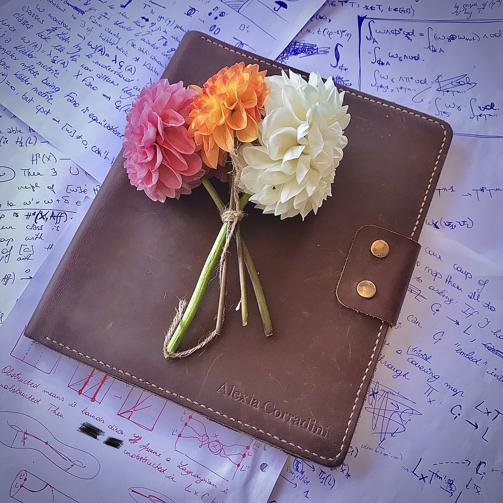

Alexia Corradini (email: ac2478@cam.ac.uk)

I am a third year PhD student in symplectic topology, supervised by Ivan Smith at the University of Cambridge. You can find my resume here.
In my research, I use tools from algebraic geometry and mirror symmetry to understand Lagrangians in symplectic manifolds. For instance, I am interested in how the theory of algebraic cycles can inform the way we classify Lagrangians, and what Hodge theory tells us about the structure of their open Gromov-Witten invariants.
Previously, I have spent time at the Université Libre de Bruxelles, Ecole Polytechnique, and Université Paris-Saclay.
The creation of this webpage was generously sponsored by Dhruv Ranganathan.
Research
Publications and preprints
- 2025 Algebraic Lagrangian cobordisms, flux and the Lagrangian Ceresa cycle. Published in Journal für die reine und angewandte Mathematik (Crelle’s Journal).
- 2022 Equivariant localisation in the theory of Z-stability for Kähler manifolds. Published in International Journal of Mathematics.
Talks and events
Talks
- 18/06/2026“A Lagrangian cycle theory” — A Lagrangian cycle theory, Institut de Mathématiques de Jussieu
- 25/03/2026“A Lagrangian cycle theory” — Conference: Floer theory beyond Floer, University of Cambridge
- 13/05/2025“Towards a Lagrangian cycle theory: the Lagrangian Ceresa cycle” — Algebraic geometry seminar, University of Cambridge
- 15/10/2025“The Lagrangian Ceresa cycle” — EDGE seminar, University of Edinburgh
- 13/05/2025“The Lagrangian Ceresa cycle” — Algebraic geometry seminar, University of Glasgow
- 28/04/2025“The Lagrangian Ceresa cycle” — MAGIC seminar, Imperial College London
- 24/04/2025“Algebraic Lagrangian cobordisms” — Syzygies and mirror symmetry virtual seminar
- 11/04/2025“The Lagrangian Ceresa cycle” — Symplectic Zoominar
- 21/03/2025Expository talk on the paper Generating the Fukaya category for Hamiltonian G-manifolds by Evans–Lekili at the European Kylerec workshop in Uppdal, Norway
- 07/03/2025“Holomorphic curve theory and the topology of Lagrangians” — Junior geometry seminar, Imperial College London
- 29/04/2024Expository talk on Flow categories at the Spring School on Floer homotopy theory in Pont-sur-Yonne, France
- 11/08/2022“Equivariant localization in the theory of Z-stability and Z-critical metrics” — Cambridge complex geometry afternoon, University of Cambridge
- 17/06/2022“Localization theorems in Kähler geometry” — Junior Geometry Seminar, University of Cambridge
Events organised
- July 2025Together with Danil Koževnikov, I organised a summer school on partially wrapped Fukaya categories which took place in Helmsley, UK and was mentored by Sheel Ganatra and Jeff Hicks. We hosted 29 participants — mainly PhD students or early career postdocs.
- 2024–2025Together with Adrian Dawid, we organised an internal “A-side seminar” over three terms, bringing together the symplectic group at the University of Cambridge, offering opportunities for members to present original research, or discuss an interesting paper.